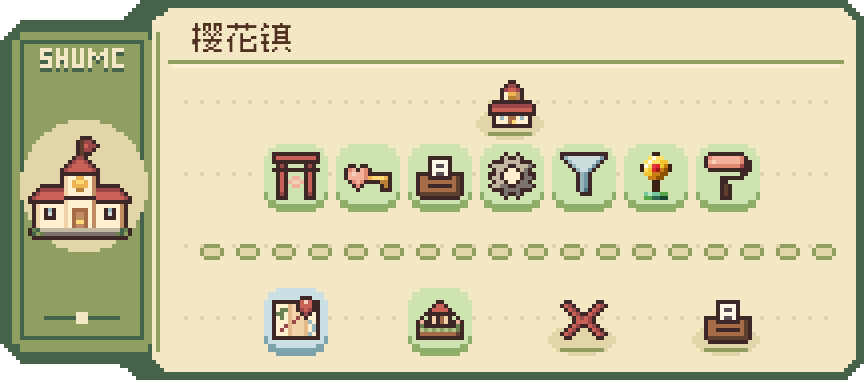
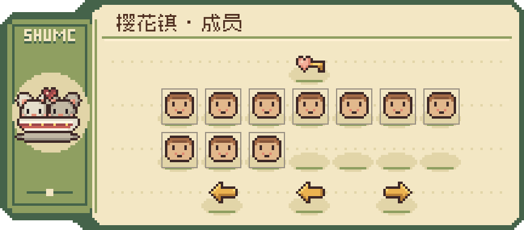
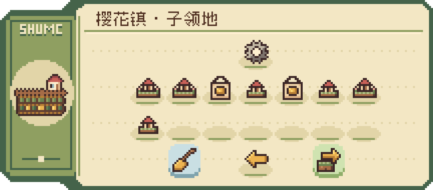
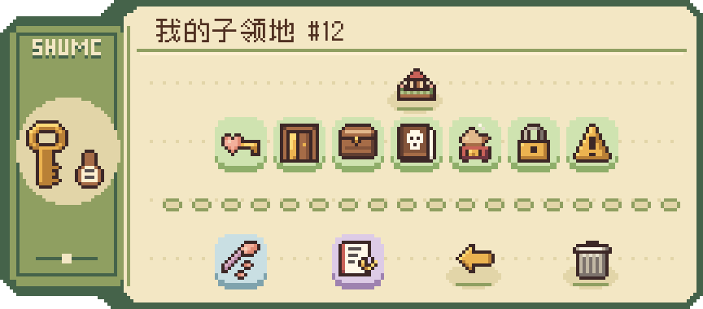
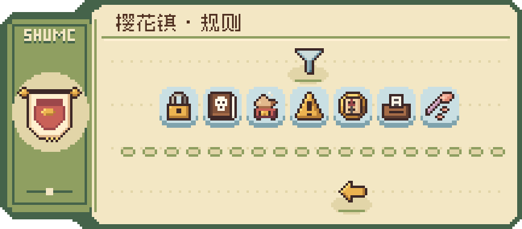
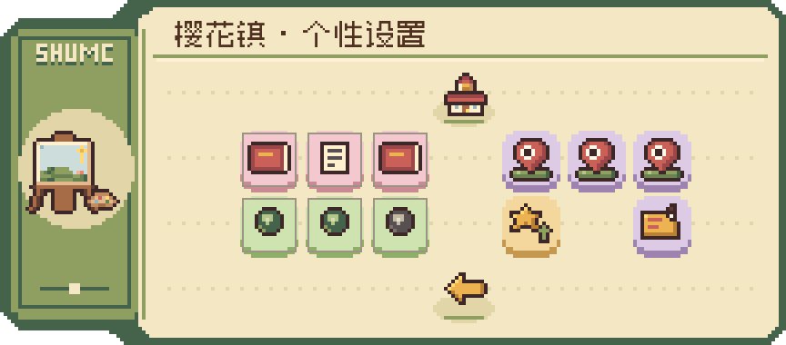
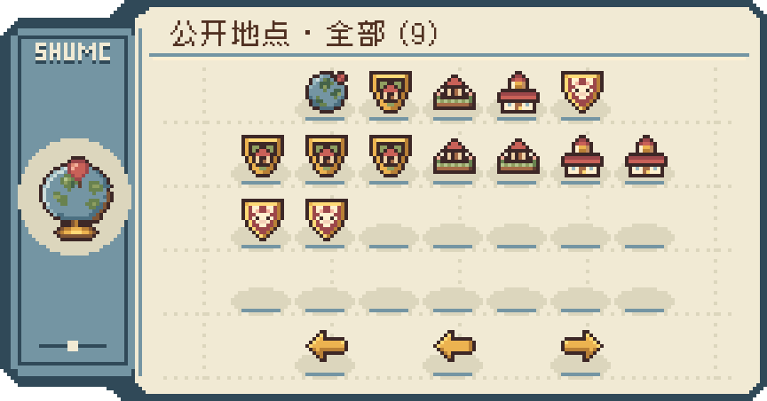

私人领地与小镇
带朋友一起住：私人领地与小镇的建立、成员身份、子领地出售、小镇规则与飞行、繁荣度奖励、传送点与公开地点
一句话
把你在城外圈的一块领地，升级成能带朋友一起住的 🏡 私人领地（最多 8 位成员）或 🏘 小镇（成员不限、能开放申请）。领主 / 镇长给大家分身份和权限、划子领地（可以送也可以卖）、定小镇规则（PVP、怪物、火、爆炸、飞行），还能设传送点、对外开放让全服来逛。不收税、不收维护费。
私人领地和小镇有什么不同
| 🏡 私人领地 | 🏘 小镇 | |
|---|---|---|
| 主人叫 | 领主 | 镇长 |
| 领地面积要求 | ≥ 1024 格（相当于 32×32） | ≥ 4096 格（相当于 64×64） |
| 建立费用 | 免费 | 500 茶屋币（私人领地升级成小镇也是补 500） |
| 成员上限（不含主人） | 8 人 | 不限 |
| 出现在 🗺 小镇目录、能开放申请加入 | — | ✔ |
| 传送点、🧭 对外开放（进 🗺 公开地点） | ✔ | ✔ |
| 子领地、规则、🕊 飞行、个性设置 | ✔ | ✔ |
| 🌟 繁荣度与奖励 | — | ✔ |
「格」是地面面积（1 格 = 1×1），和圈地额度是同一个单位。面积不够？先用 /lingdi 的「🧩 圈新地并合并」把领地扩大，见 领地与家。
从零开始：建一个自己的小镇
- 圈一块够大的地：在城外自由区用金铲子或
/lingdi圈地，面积达到 1024 格（私人领地）或 4096 格（小镇）。主城保护区和资源世界里不行。 - 站进这块地里，输入
/town（别名/xiaozhen、/小镇），或在主菜单（Shift+F）第 4 行「🏘 领地与社群」点 🏘 小镇。 - 点 🏗 建立：左键 = 私人领地，右键 = 小镇，然后在聊天栏输入名字。也可以直接输入
/town found manor 名字或/town found town 名字。 - 名字 2–12 个字，只能用汉字、字母、数字和下划线，不能和别的私人领地 / 小镇重名（不分大小写）。领地原来的信任名单会保留。
- 设传送点：站在领地里能站稳的地方，主页点 📍 或输入
/town setspawn。成员以后随时/town tp就能回来。 - 邀请朋友：
/town invite 玩家名（对方必须在线，聊天栏会弹出 [✔ 接受] [✖ 拒绝]，5 分钟内有效）。默认以居民身份加入，写/town invite 玩家名 visitor就是邀请成访客。 - 定规则：主页 ⚑ 规则里开关 PVP、怪物、火、爆炸、飞行等（见下）。

先建私人领地（免费）和朋友住着，等人多了、地扩到 4096 格以后，领主在 ⚙ 升级 / 解散 → ⬆ 升级成小镇（/town upgrade，补 500 币）。私人领地的成员、子领地、设置都会保留。


怎么加入别人的小镇
- 被邀请：领主 / 镇长 / 助理邀请你后，点聊天栏的 [✔ 接受]（或输入
/town accept 镇名，/town deny 镇名婉拒）。 - 自己申请：
/town list打开 🗺 小镇目录，能看到每个小镇的镇长、人数、中心坐标、是否开放申请。左键传送过去看看，右键申请加入（或/town apply 镇名）。镇长 / 助理在 ✉ 邀请 → 📬 入镇申请里同意后，你就成了居民。 - 一个人只能在一处当居民 / 助理 / 领主（镇长）；当访客可以同时挂好几处。
- 想走：
/town leave（有确认页）。你名下的子领地会自动收回。
身份与权限
| 身份 | 能做什么 |
|---|---|
| 访客 | 开门、按按钮、睡床（不能建造、不能开箱） |
| 居民 | 在整块领地里建造、开箱；能拥有 / 购买子领地 |
| 助理 | 居民能做的全部 + 管访客和居民、发邀请、处理入镇申请、划 / 分配 / 出售子领地（领主可以在个性设置里逐项关掉） |
| 领主 / 镇长 | 全部：规则、传送点、任免助理、改名、转让、升级、解散 |
在 👥 成员管理里：左键升职（访客 → 居民 → 助理）、右键降职、Shift+右键移出，领主 Shift+左键可以把领地转让给这位成员（接手的人要有足够的圈地额度装下这块地）。助理不能动领主和别的助理。
「访客 / 居民 / 助理」这三个叫法可以改成你们自己的（见下面「个性设置」）。


子领地：分给居民的小块地
子领地是小镇里划给某位居民的一块地，只有它的主人和主人信任的人能在里面动手（领主 / 镇长兜底也可以）。小镇的子领地数量有上限，随繁荣度等级提高（见下）。
划子领地
- 领主 / 镇长 / 助理打开主页 🧩 子领地（或
/town plot）。 - 站在要划的长方形一角，点 📌 左键 = 角点 1；走到对角，点 📌 右键 = 角点 2（也可以
/town plot pos1/pos2）。 - 点 ✅ 创建（
/town plot create），子领地从地底到天空全高度。领主也可以直接用金铲子的子领地模式划，菜单会自动认出来。
送出去还是卖出去
- 直接分配：在子领地列表里左键一块没主人的子领地，选一位居民。
- 标价出售：Shift+左键（或
/town plot sell 编号 价格，价格写 0 = 取消出售）。本镇居民 / 助理在子领地页左键购买，过确认页后一次性付清，钱直接给领主 / 镇长。确认页打开后价格被改了，这次不会成交，要重新打开看新价格。 - 收回：右键（确认页）→ 主人和 TA 好友的权限、所有设置清空，地回到领主手里。Shift+右键 = 删除子领地（方块建筑不动）。
- 花钱买的子领地受保护：只有领主 / 镇长能收回、删除，或把它的主人移出 / 降成访客，而且要按买价从领主自己的钱包退给现在的主人；领主钱不够就做不了。分配来的（没花钱的）子领地照旧随时可以收回。
- 助理不能把子领地分给自己，也不能买自己标价的子领地（防止自己标低价自己买）。
- 主人自己放弃子领地、或自己退出小镇，不退钱（确认页会写明）。
我的子领地 /town plot mine
拿到子领地后，主人可以在 🧩 我的子领地里自己管：
| 设置 | 说明 |
|---|---|
| 👥 好友信任 | 给好友 建造（左键）/ 容器（右键）/ 访客（Shift+左键）权限，Shift+右键取消。好友不用是本镇成员，只在这一块生效 |
| 🚪 外人开门 / 按钮、📦 外人开箱 | 开了以后没被信任的人也能开门 / 开箱（开箱包含开门），适合开小店 |
| 🧟 刷怪、🔥 火势蔓延 | 跟随小镇 → 开 → 关，可以和小镇设置不一样 |
| ⚔ PVP、💥 爆炸破坏、🕊 飞行 | 只能比小镇更严（小镇关着的，这里开不了） |
| 💬 进入提示 | 别人走进这块时动作栏显示的一句话（最多 40 字），也可以 /town plot greet 编号 提示 |
| 🚪 放弃 | 把地还给领主（不退钱） |




小镇规则 ⚑
领主 / 镇长在主页 ⚑ 规则里改，只在自己这块领地里生效。优先级：子领地设置 → 小镇设置 → 默认。
| 规则 | 默认 | 说明 |
|---|---|---|
| ⚔ PVP | 关 | 主世界本身不开 PVP，所以这个开关在主世界里显示为灰色「不可用 · 本世界全局关闭 PVP」，点了也不会打开。茶屋保持温和，放心 |
| 🧟 怪物生成 | 开 | 关掉后自然刷怪、增援、巡逻队、袭击都不会在范围里生成（刷怪笼、刷怪蛋不受影响） |
| 🔥 火势蔓延 | 关 | 关着时火不蔓延、不烧方块，岩浆和闪电不点火（打火石照常能用） |
| 💥 爆炸破坏 | 关 | 关着时爆炸不炸坏方块（苦力怕再也炸不了房子） |
| 🧭 公开传送 | 关 | 就是「对外开放」：开了以后不是成员也能 /town tp 过来，并出现在 🗺 公开地点里。要先设好传送点 |
| 📬 开放申请 | 关 | 仅小镇：开了别人才能在小镇目录里申请加入 |
| 🕊 飞行 | 关闭 | 三档：关闭 / 仅成员 / 所有人。生存模式在范围里双击空格就能飞 |
🕊 飞行的细节
- 走进能飞的范围自动获得飞行；走出去、规则改了、身份变了、下线时自动收回。
- 收回时如果你在空中：给 5 秒缓降，并且 10 秒内免一次摔伤，不会摔死。
- 骑马、坐船进出也会判断。星渊里永远不能飞。
进出提示
走进小镇时屏幕中间显示「欢迎来到 名字」（副标题是你的身份，或领主 / 镇长的名字；镇长设了欢迎语还会显示欢迎语），离开时动作栏提示。走进子领地时动作栏写「谁的子领地 · 进入提示」，出售中的会写价格。在边界来回走不会刷屏：同一处 30 秒只弹一次标题。


传送点、改名与对外开放
- 📍 传送点：领主 / 镇长
/town setspawn（或主页 📍），必须在范围里、能站稳。成员随时/town tp（或主页 🚩）免费传送，没有冷却。 - 每次传送前都会检查落点：传送点已不在范围里、有岩浆、悬空或被方块堵住 → 不传，并清掉传送点、提醒领主重新设置。
- 🧭 对外开放：规则页打开「公开传送」后，谁都能
/town tp 镇名或在 🗺 公开地点里点过来逛。外人只是传送过来，建造和开箱仍按身份权限。 - ✏ 改名：领主 / 镇长在 ⚙ 升级 / 解散 → ✏（或
/town rename 新名字），确认页确认后从你自己的钱包扣 300 茶屋币。规则和起名一样（2–12 字、不重名）；改完会通知成员。
个性设置 🎨
领主 / 镇长：⚙ 升级 / 解散 → 🎨 个性设置（或 /town settings）。
| 项目 | 字数 | 指令 |
|---|---|---|
| 简介（目录和概况里显示） | 60 字 | /town set desc 文字 |
| 公告（改了会通知在线成员） | 80 字 | /town set notice 文字 |
| 进镇欢迎语（非成员进镇时标题下显示） | 30 字 | /town set welcome 文字 |
| 改身份名（访客 / 居民 / 助理改成你们的叫法） | 1–4 字 | /town set label resident 镇民（不写名字 = 恢复默认） |
| 助理权限开关：✉ 邀请 / 审批、👥 任免 / 移出成员、🧩 子领地管理 | — | 菜单里逐项开关（默认全开） |
菜单里右键对应按钮可以清空文字。所有文字会自动去掉颜色代码。


🌟 小镇繁荣度
小镇（私人领地没有）会按人气涨繁荣度，主页概况和 ⚙ 页都能看到：
繁荣度 = (居民及以上人数 + 镇长) × 50 + 子领地数 × 30 + 帮工数 × 20（最多算 4 个）+ 活跃分
- 活跃分：居民 / 助理在自己小镇范围里在线，每 5 分钟 +1，每人每天最多 +24。
- 帮工：镇上（含子领地里）的每位 👩🌾 领地帮工 +20。
| 等级 | 需要繁荣度 | 子领地上限 | 传送点特效 | 第一次到达：镇长奖励 | 第一次到达：每位居民奖励 |
|---|---|---|---|---|---|
| Lv1 | 0 | 3 | — | — | — |
| Lv2 | 300 | 5 | 传送点周围飘光 | 300 币 + 樱花晶洞 ×2 | 80 币 + 樱花抹茶拿铁 |
| Lv3 | 800 | 8 | 飘光 | 500 币 + 金星品质肥 ×4 | 120 币 + 称号「🌟 小镇之星」 |
| Lv4 | 1600 | 12 | 换成星光 | 700 币 + 紫晶晶洞 ×2 | 160 币 + 樱花晶洞 ×2 |
| Lv5 | 3000 | 不限 | 星光 | 1000 币 + 称号「🏮 繁荣镇长」+ 石灯笼家具 | 200 币 + 樱花许愿河灯 ×2 |
奖励放进 🎁 待领奖励（/town rewards，和公会奖励是同一个箱子），离线也不会丢。每个等级的奖励只在小镇第一次到达时发。小镇专属称号不在称号图鉴里，拿到后在「我的称号」里戴。
名字前缀 /town prefix
当上居民以后，你可以在 Tab 列表、聊天和头顶名字的称号前面显示〔小镇名〕。/town prefix（和 /guild prefix 是同一个设置）可选：自动（有公会显示会标，没有就显示小镇名）、只显示公会会标、只显示小镇名、两个都显示（可选谁在前）、都不显示。详见 公会。
公会驻扎
一个 🛡 公会可以驻扎一个小镇：镇长本人就是会长时直接生效；否则镇长会收到申请，用 /town garrison accept 或 deny 处理，以后也可以 /town garrison end 结束。驻扎期间公会成员自动成为本镇居民（已经在别处当居民的跳过），公会退出或撤出时只收回因驻扎得到的居民身份。有权限的公会职位还能用公会银行买镇上出售中的子领地。
解散
领主 / 镇长：⚙ 升级 / 解散 → 🗑 解散（确认页，/town dissolve）。成员权限、子领地分配和子领地设置全部清空，领地本身还是你的，建筑都不动。如果领地被放弃（/abandonclaim），小镇也会自动解散。
🗺 公开地点 /places
全服对外开放的地方都在一个目录里：/places（别名 /difang、/gongkai、/公开地点），或主菜单第 3 行的 🗺 公开地点。
- 页签：全部 / 领地 / 私人领地 / 小镇 / 公会，每页 21 个，写名字、主人（领主 / 镇长 / 会长）、类别、坐标。
- 左键免费传送；也可以
/places 名字直接过去（Tab 键只补全对外开放的）。 - 点的时候会重新检查：还开放吗？落点安全吗？不行就提示并刷新目录。
- 怎么让自己的地方出现在这里：普通领地见 领地名字与传送点；私人领地 / 小镇打开 ⚑ 规则里的 🧭 公开传送；公会见 公会传送点。


指令一览
| 指令 | 谁能用 | 作用 |
|---|---|---|
/town | 所有人 | 打开小镇菜单（站在自己领地里时有 🏗 建立） |
/town found manor|town 名字 | 领地主人 | 把脚下自己的领地建成私人领地 / 小镇 |
/town upgrade | 领主 | 私人领地升级成小镇（确认页，500 币，要 4096 格） |
/town list | 所有人 | 小镇目录：左键传送，右键申请 |
/town apply 镇名 | 所有人 | 申请加入开放申请的小镇 |
/town accept|deny [镇名] | 被邀请的人 | 接受 / 婉拒邀请 |
/town invite 玩家 [resident|visitor] | 领主 / 镇长 / 助理 | 邀请在线玩家当居民 / 访客 |
/town tp [镇名] | 成员；对外开放时所有人 | 免费传送到传送点 |
/town setspawn | 领主 / 镇长 | 把传送点设在脚下 |
/town plot [pos1|pos2|create|mine] | 领主 / 镇长 / 助理（mine = 子领地主人） | 划子领地 / 打开我的子领地 |
/town plot sell 编号 价格 | 领主 / 镇长 / 助理 | 标价出售（0 = 取消） |
/town plot greet 编号 [提示] | 子领地主人 | 改进入提示（不写 = 清空） |
/town info [名字] | 所有人 | 聊天栏看概况 |
/town rename 新名字 | 领主 / 镇长 | 改名（300 币） |
/town settings · /town set … | 领主 / 镇长 | 个性设置（简介、公告、欢迎语、身份名） |
/town rewards | 所有人 | 🎁 待领奖励 |
/town prefix | 所有人 | 名字前缀 |
/town garrison accept|deny|end | 镇长 | 处理 / 结束公会驻扎 |
/town leave · /town dissolve | 成员 · 领主 | 退出 · 解散（都有确认页） |
/places [名字] | 所有人 | 公开地点目录 / 直接去某处 |
常见问题
我的领地不够 1024 格怎么办？
用 /lingdi 的 ⚡ 一键圈地、快捷扩容或「🧩 圈新地并合并」把地扩大。圈地额度新玩家初始 400 格，在线每小时 +150 格，攒一攒就够了。
我能同时在两个小镇吗？
当居民 / 助理 / 领主只能一处；当访客可以好几处。
子领地被收回，我的箱子会不会没？
收回只清权限和设置，不动任何方块。但收回后你就不能再开那里的箱子了，搬家前先把东西拿走。如果是你花钱买的子领地，只有镇长能收回，而且要按买价退钱给你。
开了 PVP 为什么还是打不了人？
主世界全局关闭 PVP，小镇的 PVP 开关在主世界显示为「不可用」。
飞行到小镇边界会摔死吗？
不会。飞出范围时会缓降 5 秒，10 秒内还免一次摔伤。